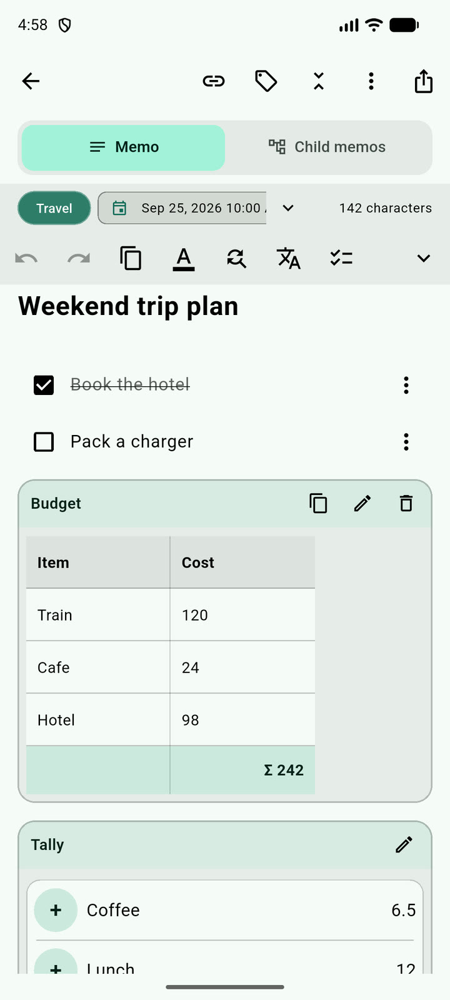
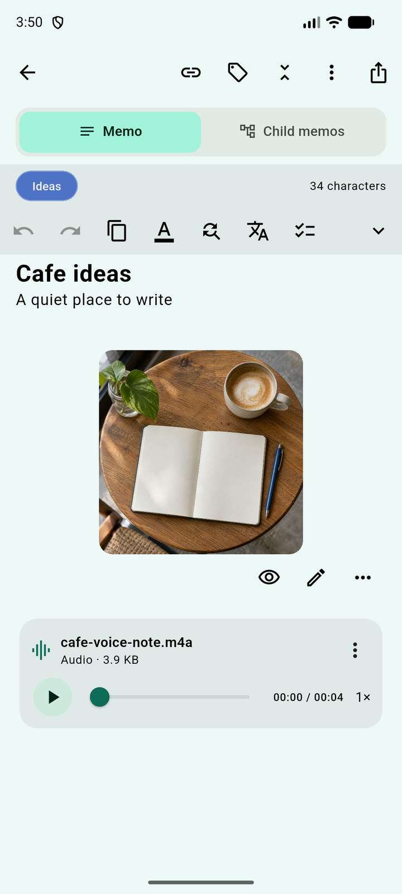
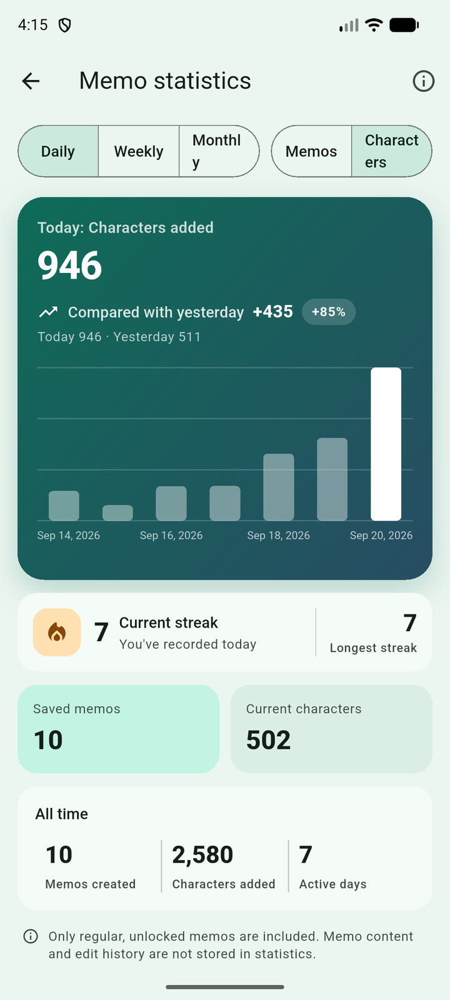
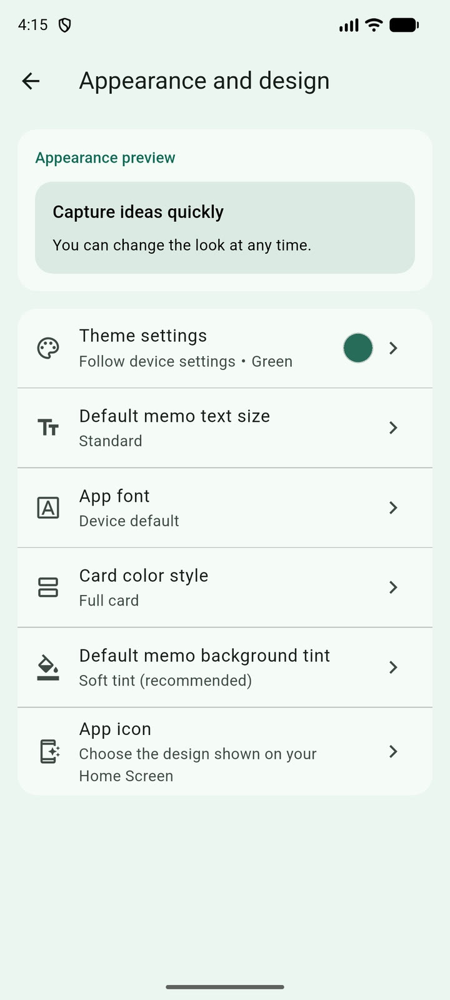
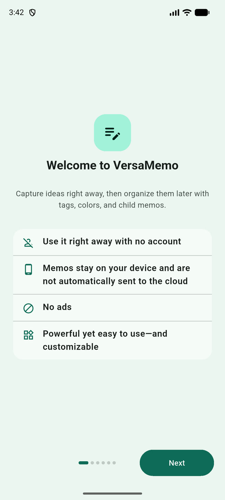
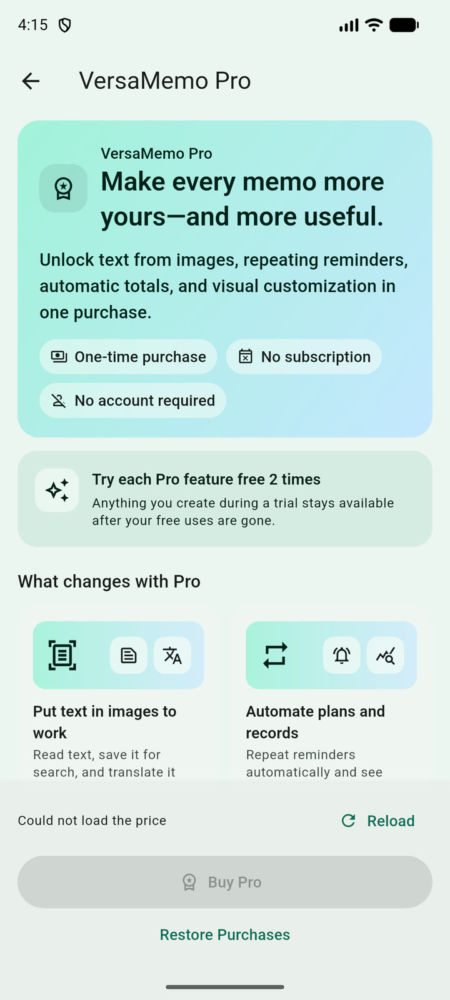

Build a journaling habit
Start with text, keep photos and audio beside it, then review writing days and streaks over time.
From journals and study to work and everyday expenses. Combine text, images, audio, tables, and checklists in a single memo, and organize them with cards, hierarchy, and calendars.

Who VersaMemo is for
From quick notes and saved photos or voice memos to work tasks and schedules, you can keep everything in one place without switching apps for each purpose.
Start with text, keep photos and audio beside it, then review writing days and streaks over time.
Organize sources, reading notes, and meeting records with tags and a clear three-level hierarchy.
Keep checklists, schedules, timers, and reusable totals beside the notes that explain them.
Place images, handwriting, and voice memos beside your words, so the whole topic stays together when you return to it.
See VersaMemo in action
You do not need to use every feature right away. Start by jotting down plain text, and add tables, images, or audio only when you need them.
Combine text, checklists, tables, images, handwriting, PDF and text files, and voice memos in a single memo. Timers and totals stay right next to the context around them.

Keep growing collections organized with up to three levels of parent and child memos. Switch between list, card, and calendar views, and quickly find what you need using tags, colors, schedules, linked notes, and multi-condition search.
Review writing days, character counts, and current and longest streaks—all on your device.

Choose themes, fonts, cards, wallpapers, text colors, and even the app icon.

Work with what you captured
Read text from photos or translate selected passages without switching to a separate app.
Read text visible in a photo on device, review the result, then use it in the note or search.
After downloading a language model, translate your selection on device.
On supported iPhones, turn a saved voice memo into editable text using on-device recognition.
Review content shared from other apps before saving, and export memos together as a ZIP archive.
Numbers and time tracking
Record numbers and track time alongside your writing without opening a separate spreadsheet or timer app.
Create rows and columns to enter numbers, and automatically calculate column totals and item products.
Measure study or work sessions directly inside your memo and keep the time record beside your notes.
Built for everyday use
Get notified about upcoming plans, pin notes to your Home Screen, or hide private memos from the list.
Set a date and time on any memo to receive a reminder, with support for recurring schedules.
Place frequently used memos or checklists on your device's Home Screen to check them without opening the app.
In addition to locking the whole app, you can lock individual memos or hide them from the main list.

Start without an account
No VersaMemo account is required. Notes and attachments are stored on your device by default, and creating, editing, and search remain available offline.
App and memo locks restrict access on screen; they do not encrypt the stored data itself. Local backups may be removed when the app is uninstalled, so export a ZIP when you need a copy outside the app. Exported ZIPs can optionally be protected with a password.
See how VersaMemo handles dataVersaMemoPRO
PREMIUM · ONE-TIME PURCHASECore note-taking stays free. Eligible Pro tools can be tried twice per category, so you can decide what helps before making a one-time purchase through the store for the platform you use.
Core notes, checklists, tables, cards and hierarchy, calendars, one image per memo, voice memos, widgets, and backups.
Wallpapers and fonts, extra images and advanced image editing, OCR and translation, recurring reminders, related memos, and totals.
Content created during trials stays usable after the trials run out. Check the in-app store price before purchasing.

Good to know
Yes. VersaMemo does not require its own account for creating, editing, searching, or accessing local backups.
Yes. You can open the app and start with a simple text note. Cards, hierarchies, timers, media, calculations, and other tools are available when you need them rather than required up front.
Not currently. Notes are stored locally, and you can create local backups or export a portable ZIP. Direct iCloud Drive, Google Drive, and multi-device sync are not currently supported.
The core note-taking experience is free. Some advanced customization, image, OCR, translation, reminder, relationship, and calculation features use category-based trials and VersaMemo Pro.
No. App Lock and memo locks restrict access inside VersaMemo, but they do not encrypt the database, attachments, local backups, or Home Screen widget content. Exported ZIPs can optionally be password-protected using a separate feature.
Visit the support page for common answers and email contact. VersaMemo does not automatically include your memo content in a support request.
Available on the App Store and Google Play
No account registration required and no ads. Core features are free to use, and you can try Pro features whenever you need them.